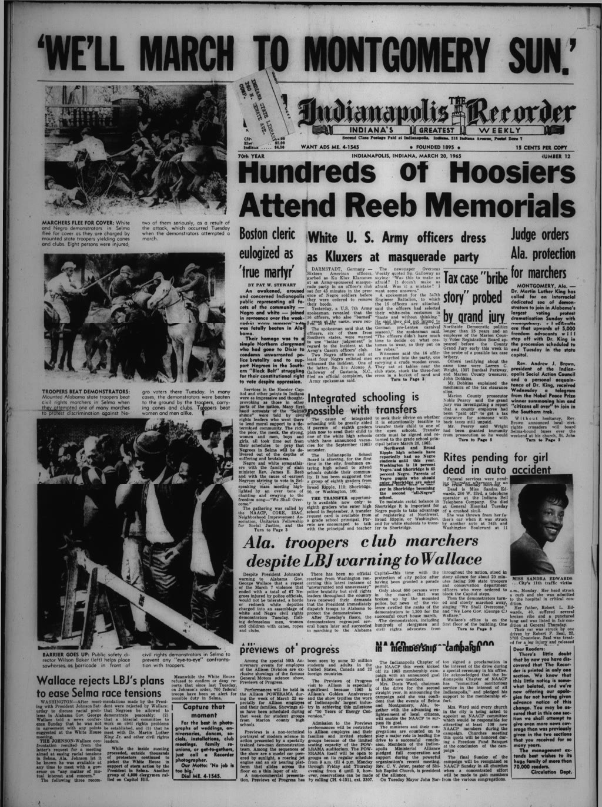
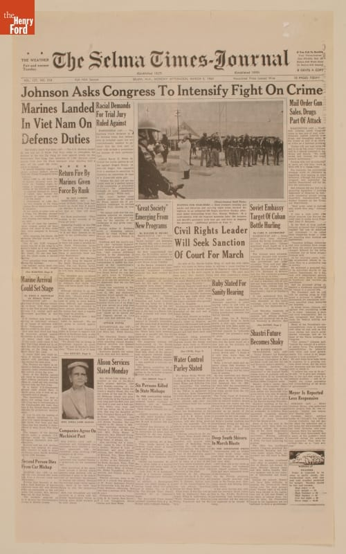
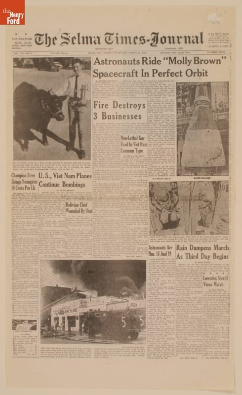

HN-652 · March 20, 1965 · Civil Rights & Social Change > Civil Rights Movements & Protests > Protest crackdowns
Source: Indianapolis Recorder, p. 1 — original page; National Archives, Selma and voting-rights legislation.
Report: Photographs showed state troopers on horseback striking demonstrators; the page said activists intended to march toward Montgomery and documented additional violence during protests that week.
Assessment: The better-known “Bloody Sunday†attack occurred March 7, but this page's particular photograph caption describes a Tuesday incident, so the photograph should not automatically be identified as the March 7 encounter. The ongoing Selma campaign helped spur national voting-rights legislation.
Authentic images retrieved from Hoosier State Chronicles (Indiana State Library) and The Henry Ford (museum collection scan). Article crops are located using the archive's own OCR word coordinates and rendered at native crop resolution; article clips are assembled from the archive's own article-block images; page images marked "archive tiles" are stitched from the archive's own tiled page service at its 256-px tile cap; page images marked "issue PDF" are single pages rasterised from the archive's own issue PDF, with the page chosen by matching the headline against the PDF's text layer; page scans are reduced-size access renditions. No images were generated, mocked, or retouched.



Status: Archive images acquired
Authentic archive-owned image renditions were retrieved for this record and are displayed above. The source-acquisition manifest preserves the original pre-acquisition feasibility assessment.
URL (preserved verbatim): https://newspapers.library.in.gov/?a=d&d=INR19650320-01.1.1
Saved research report: Historical_Newspaper_Event_Research_628-652_2026-10-23.md
Evidence note: A newspaper report means a historical publication made a claim; it does not establish that claim as fact. Contemporary reporting is separated from later scholarly context and our own assessment.